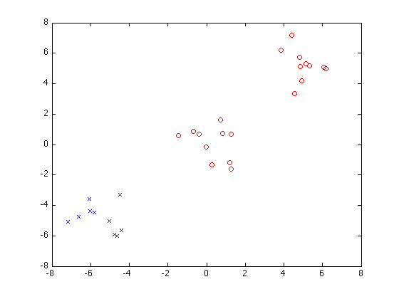
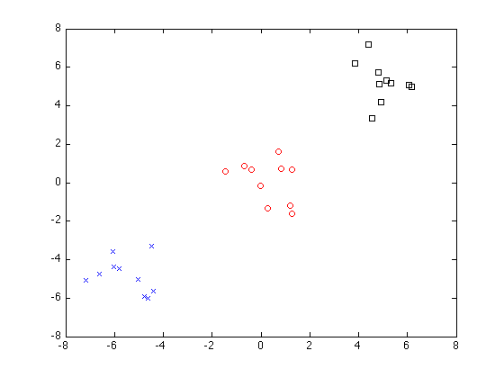
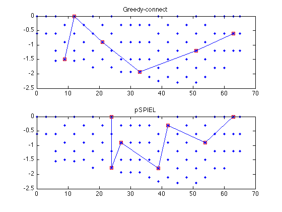

Matlab Toolbox for Submodular Function Optimization (v 2.0)
Tutorial script and all implementations Andreas Krause (krausea@gmail.com). Slides, videos and detailed references available at http://www.submodularity.org.
Tested in MATLAB 7.0.1 (R14), 7.2.0 (R2006a), 7.4.0 (R2007a, MAC).
Welcome to this introduction!
We will discuss how we can use the toolbox to optimize submodular set functions, i.e., functions that take a subset A of a finite ground set V to the real numbers, satisfying
A note on Octave compatibility:
This toolbox also works under Octave; however, since Octave handles function objects differently from Matlab. Use the function sfo_octavize to make a submodular function object Octave ready; type 'help sfo_octavize' for more information. The script sfo_tutorial_octave has been tested under Octave 3.2.3
Some information on conventions:
All algorithms will use function objects. For example, to measure variance reduction in a Gaussian model, call F = sfo_fn_varred(sigma,V) where sigma is the covariance matrix and V is the ground set, e.g., 1:size(sigma,1) (see examples below). They will also take an index set V, and A must be a subset of V.
Implemented algorithms:
1) Minimization:
- sfo_min_norm_point: Fujishige's minimum-norm-point algorithm for minimizing general submodular functions
- sfo_queyranne: Queyranne's algorithm for minimizing symmetric submodular functions
- sfo_ssp: Submodular-supermodular procedure of Narasimhan & Bilmes for minimizing the difference of two submodular functions
- sfo_s_t_min_cut: For solving min F(A) s.t. s in A, t not in A
- sfo_minbound: Return an online bound on the minimum solution
- sfo_greedy_splitting: Greedy splitting algorithm for clustering of Zhao et al
2) Maximization:
- sfo_polyhedrongreedy: For solving an LP over the submodular polytope
- sfo_greedy_lazy: The greedy algorithm for constrained maximization / coverage using lazy evaluations
- sfo_greedy_welfare: The greedy algorithm for maximizing subject to a partition matroid constraint
- sfo_cover: Greedy coverage algorithm using lazy evaluations
- sfo_celf: The CELF algorithm of Leskovec et al. for budgeted maximization
- sfo_ls_lazy: Local search algorithm for maximizing nonnegative submodular functions
- sfo_saturate: The SATURATE algorithm of Krause et al. for robust optimization of submodular functions
- sfo_max_dca_lazy: The Data Correcting algorithm of Goldengorin et al. for maximizing general (not necessarily nondecreasing) submodular functions
- sfo_maxbound: Return an online bound on the maximum solution
- sfo_pspiel: The pSPIEL algorithm for Krause et al. for trading off information and communication cost
- sfo_pspiel_orienteering: The pSPIEL algorithm for Krause et al. for submodular orienteering
- sfo_balance: eSPASS algorithm of Krause et al. for simultaneous placement and balanced scheduling
3) Miscellaneous
- sfo_lovaszext: Computes the Lovasz extension for a submodular function
- sfo_mi_cluster: Example clustering algorithm using both maximization and minimization
- sfo_pspiel_get_path: Convert a tree into a path using the MST heuristic algorithm
- sfo_pspiel_get_cost: Compute the Steiner cost of a tree / path
4) Submodular functions:
- sfo_fn_cutfun: Cut function
- sfo_fn_detect: Outbreak detection / facility location
- sfo_fn_entropy: Entropy of Gaussian random variables
- sfo_fn_infogain: Information gain about gaussian random variables
- sfo_fn_mi: Gaussian mutual information
- sfo_fn_varred: Variance reduction (truncatable, for use in SATURATE)
- sfo_fn_example: Two-element submodular function example from tutorial slides
- sfo_fn_iwata: Iwata's test function for testing minimization code
- sfo_fn_ising: Energy function for Ising model for image denoising
- sfo_fn_residual: For defining residual submodular functions
- sfo_fn_invert: For defining F(A) = F'(V\A)-'F(V)
- sfo_fn_lincomb: For defining linear combinations of submodular functions
Here is an overview reference:
If you use the toolbox for your research, please cite A. Krause. "SFO: A Toolbox for Submodular Function Optimization". Journal of Machine Learning Research (2010).
A. Krause, C. Guestrin. Near-optimal Observation Selection Using Submodular Functions. Survey paper, Proc. of 22nd Conference on Artificial Intelligence (AAAI) 2007 -- Nectar Track
Change log
Version 2.0 * Modified specification of optional parameters (using sfo_opt) * Added sfo_ls_lazy for maximizing nonnegative submodular functions * Added sfo_fn_infogain, sfo_fn_lincomb, sfo_fn_invert, ... * Added additional documentation and more examples * Now Octave ready
Version 1.1 * added pSPIEL for informative path planning * added eSPASS for simultaneous placement and scheduling * new convention for submodular functions (incremental computations, etc.) Much faster!
Contents
- PART 1) MINIMIZATION OF SUBMODULAR FUNCTIONS
- Queyranne's algorithm for minimizing symmetric submodular functions
- Minimizing general submodular functions
- Finding a minimum s-t-cut using general submodular function minimization
- Clustering using mutual information
- Image denoising using submodular function minimization
- PART 2) MAXIMIZATION OF SUBMODULAR FUNCTIONS
- The lazy greedy algorithm
- Optimizing greedily over matroids
- The lazy greedy coverage algorithm
- The CELF algorithm for budgeted maximization
- Submodular-supermodular procedure of Narasimhan & Bilmes
- The Data-Correcting algorithm for maximizing general submodular functions
- The SATURATE algorithm for robust optimization
- The pSPIEL Algorithm for trading off accuracy and communication cost
- The eSPASS algorithm for simultaneous placement and scheduling.
- PART 3) MISCELLANEOUS OTHER FUNCTIONS
- The Lovasz extension
- Bounds on optimal solution for minimization
- The polyhedron greedy algorithm
clear randn('state',0); rand('state',0);
PART 1) MINIMIZATION OF SUBMODULAR FUNCTIONS
Queyranne's algorithm for minimizing symmetric submodular functions
We will first explore Queyranne's algorithm for minimizing a symmetric submodular function.
Example: F is a cut function on an undirected graph with adjacency matrix G_un on vertices V_G:
G_un=[0 1 1 0 0 0; 1 0 1 0 0 0; 1 1 0 1 0 0; 0 0 1 0 1 1; 0 0 0 1 0 1; 0 0 0 1 1 0] V_G = 1:6;
G_un =
0 1 1 0 0 0
1 0 1 0 0 0
1 1 0 1 0 0
0 0 1 0 1 1
0 0 0 1 0 1
0 0 0 1 1 0
Here's the cut function:
F_cut_un = sfo_fn_cutfun(G_un);
Now we can run Queyranne's algorithm, which will return the minimum cut in graph G_un:
A = sfo_queyranne(F_cut_un,V_G)
A =
4 5 6
Minimizing general submodular functions
We can also minimize general (not necessarily symmetric) submodular functions. This toolbox implements Fujishige's min-norm-point algorithm. We try it out on a test function by Iwata, described, e.g., in Fujishige et al. 06, on a set of size 100
V_iw = 1:100; F_iw = sfo_fn_iwata(length(V_iw));
Now let's run the algorithm:
A = sfo_min_norm_point(F_iw,V_iw)
suboptimality bound: -11571.000000 <= min_A F(A) <= F(A_best) = -6669.000000; delta<=4902.000000
suboptimality bound: -6834.000000 <= min_A F(A) <= F(A_best) = -6834.000000; delta<=0.000000
suboptimality bound: -6834.000000 <= min_A F(A) <= F(A_best) = -6834.000000; delta<=0.000000
A =
Columns 1 through 17
34 35 36 37 38 39 40 41 42 43 44 45 46 47 48 49 50
Columns 18 through 34
51 52 53 54 55 56 57 58 59 60 61 62 63 64 65 66 67
Columns 35 through 51
68 69 70 71 72 73 74 75 76 77 78 79 80 81 82 83 84
Columns 52 through 67
85 86 87 88 89 90 91 92 93 94 95 96 97 98 99 100
Finding a minimum s-t-cut using general submodular function minimization
Instead of unconstrained minimization
we can also solve
Example: We want to find minimum s-t-cuts in a directed graph with adjacency matrix:
G_dir=[0 1 1.2 0 0 0; 1.3 0 1.4 0 0 0; 1.5 1.6 0 1.7 0 0; 0 0 1.8 0 1.9 2; 0 0 0 2.1 0 2.2; 0 0 0 2.3 2.4 0]
G_dir =
0 1.0000 1.2000 0 0 0
1.3000 0 1.4000 0 0 0
1.5000 1.6000 0 1.7000 0 0
0 0 1.8000 0 1.9000 2.0000
0 0 0 2.1000 0 2.2000
0 0 0 2.3000 2.4000 0
We define the directed cut function:
F_cut_dir = sfo_fn_cutfun(G_dir);
Now let's try to find the minimum cut separating node 1 and 6 in graph G_dir:
A16 = sfo_s_t_mincut(F_cut_dir,V_G,1,6)
suboptimality bound: -0.900000 <= min_A F(A) <= F(A_best) = 2.100000; delta<=3.000000
suboptimality bound: -0.500000 <= min_A F(A) <= F(A_best) = -0.500000; delta<=0.000000
suboptimality bound: -0.500000 <= min_A F(A) <= F(A_best) = -0.500000; delta<=0.000000
suboptimality bound: -0.500000 <= min_A F(A) <= F(A_best) = -0.500000; delta<=0.000000
A16 =
2 3 1
Now let's separate node 4 and 6:
A46 = sfo_s_t_mincut(F_cut_dir,V_G,4,6)
suboptimality bound: -4.400000 <= min_A F(A) <= F(A_best) = 1.300000; delta<=5.700000
suboptimality bound: -1.800000 <= min_A F(A) <= F(A_best) = -1.800000; delta<=0.000000
suboptimality bound: -1.800000 <= min_A F(A) <= F(A_best) = -1.800000; delta<=-0.000000
suboptimality bound: -1.800000 <= min_A F(A) <= F(A_best) = -1.800000; delta<=0.000000
A46 =
1 2 3 4
Clustering using mutual information
Now we use the Greedy Splitting algorithm for clustering. We first generate 30 data points at random:
n = 10; C1 = randn(2,n)+5; C2 = randn(2,n); C3 = randn(2,n)-5; X = [C1';C2';C3'];
Here's the data points:
figure plot(X(:,1),X(:,2),'b.'); hold on
Now we use a Gaussian kernel function to measure similarity of the data points:
D = dist(X')/2; sigma_cl = exp(-D.^2)+eye(3*n)*.01;
These points will make up our ground set V:
V = 1:(3*n);
We use entropy as a measure of cluster inhomogeneity:
E = sfo_fn_entropy(sigma_cl,V);
Now do greedy splitting with 2 clusters:
P = sfo_greedy_splitting(E,V,2)
figure
plot(X(P{1},1),X(P{1},2),'bx'); hold on
plot(X(P{2},1),X(P{2},2),'ro');
iteration 1, cluster 1
P =
[1x10 double] [1x20 double]
 Now do greedy splitting with 3 clusters:
P = sfo_greedy_splitting(E,V,3)
figure
plot(X(P{1},1),X(P{1},2),'bx'); hold on
plot(X(P{2},1),X(P{2},2),'ro');
plot(X(P{3},1),X(P{3},2),'ks'); hold off
iteration 1, cluster 1
iteration 2, cluster 1
iteration 2, cluster 2
P =
[1x10 double] [1x10 double] [1x10 double]
 Image denoising using submodular function minimization
We will now do inference in a Markov Random Field using submodular function minimization.
Let's create a binary image of size 40x40, with a white square in front: of a black square
D = 40; S = 10; img = zeros(D); img(S:(D-S),S:(D-S))=1;
now we perturb it with 20% noise:
noiseProb = 0.2; mask = rand(size(img))>(1-noiseProb); imgN = img; imgN(mask)=1-imgN(mask);
Our ground set will be the set of all pixels:
V = 1:numel(img);
Here's the original image and the noisy copy:
figure; subplot(121); imshow(img); title('original image') subplot(122); imshow(imgN); title('noisy image')
We define potential functions for the Markov Random Field (ising model). Here, coeffPix is the coefficient for the pixel potentials, the other coefficients enforce smoothness.
coeffPix = 1; coeffH = 1; coeffV = 1; coeffD = .0;
Now we define a submodular function measuring the "energy" of smooth approximations to the noisy image imgN:
F = sfo_fn_ising(imgN, coeffPix, coeffH, coeffV, coeffD);
Initialize with noisy image:
Ainit = find(imgN(:));
Now we minimize F using the min-norm-point algorithm. We allow ourselves to be at most 1 unit of energy (1 pixel) off the optimal solution:
callback = [];
opt = sfo_opt({'minnorm_init',Ainit,'minnorm_stopping_thresh',3.999,'minnorm_callback',callback});
tic; AD = sfo_min_norm_point(F,V,opt); toc
suboptimality bound: -843.000000 <= min_A F(A) <= F(A_best) = 1725.000000; delta<=2568.000000 suboptimality bound: -327.513820 <= min_A F(A) <= F(A_best) = 789.000000; delta<=1116.513820 suboptimality bound: -250.470243 <= min_A F(A) <= F(A_best) = -19.000000; delta<=231.470243 suboptimality bound: -238.981194 <= min_A F(A) <= F(A_best) = -119.000000; delta<=119.981194 suboptimality bound: -232.609701 <= min_A F(A) <= F(A_best) = -126.000000; delta<=106.609701 suboptimality bound: -226.994977 <= min_A F(A) <= F(A_best) = -155.000000; delta<=71.994977 suboptimality bound: -220.836858 <= min_A F(A) <= F(A_best) = -167.000000; delta<=53.836858 suboptimality bound: -213.784843 <= min_A F(A) <= F(A_best) = -167.000000; delta<=46.784843 suboptimality bound: -206.959990 <= min_A F(A) <= F(A_best) = -175.000000; delta<=31.959990 suboptimality bound: -206.361698 <= min_A F(A) <= F(A_best) = -185.000000; delta<=21.361698 suboptimality bound: -205.753533 <= min_A F(A) <= F(A_best) = -187.000000; delta<=18.753533 suboptimality bound: -204.835702 <= min_A F(A) <= F(A_best) = -189.000000; delta<=15.835702 suboptimality bound: -203.340390 <= min_A F(A) <= F(A_best) = -191.000000; delta<=12.340390 suboptimality bound: -201.515647 <= min_A F(A) <= F(A_best) = -191.000000; delta<=10.515647 suboptimality bound: -200.872117 <= min_A F(A) <= F(A_best) = -191.000000; delta<=9.872117 suboptimality bound: -199.959495 <= min_A F(A) <= F(A_best) = -191.000000; delta<=8.959495 suboptimality bound: -198.246040 <= min_A F(A) <= F(A_best) = -191.000000; delta<=7.246040 suboptimality bound: -196.203150 <= min_A F(A) <= F(A_best) = -191.000000; delta<=5.203150 suboptimality bound: -195.752745 <= min_A F(A) <= F(A_best) = -191.000000; delta<=4.752745 suboptimality bound: -195.352582 <= min_A F(A) <= F(A_best) = -191.000000; delta<=4.352582 suboptimality bound: -194.957251 <= min_A F(A) <= F(A_best) = -191.000000; delta<=3.957251 suboptimality bound: -194.957251 <= min_A F(A) <= F(A_best) = -191.000000; delta<=3.957251 Elapsed time is 11.902548 seconds.
Now let's plot the reconstruction:
imgD = zeros(size(img)); imgD(AD)=1; figure; subplot(131); imshow(img); title('original image') subplot(132); imshow(imgN); title('noisy image') subplot(133); imshow(imgD); title('reconstructed image')
PART 2) MAXIMIZATION OF SUBMODULAR FUNCTIONS
We can also (near-optimally) solve some maximization problems using submodular functions. We first study constrained optimization:
The lazy greedy algorithm
We will first explore the lazy greedy algorithm on an experimental design problem. More specifically, we want to choose sensing locations to optimally predict pH values on a lake in Merced, California.
As objective function, we use the mutual information criterion of Caselton & Zidek '84 based on a Gaussian Process that we trained on the pH data.
Let's load the data, which contains covariance matrix of the GP, merced_data.sigma, and locations (coordinates) merced_data.coords:
load merced_data;
Define the ground set for the submodular functions:
V_sigma = 1:size(merced_data.sigma,1);
These correspond to the following locations that we can select for sensing:
figure plot(merced_data.coords(:,1),merced_data.coords(:,2),'k.'); xlabel('Horizontal location along transect'); ylabel('Vertical location (depth)'); title('Possible sensing locations on the lake');
Here's the mutual information criterion:
F_mi = sfo_fn_mi(merced_data.sigma,V_sigma);
Note: mutual information is submodular, but not monotonic! But for k << n it's approximately monotonic, and that's enough (see Krause et al., JMLR '08).
We greedily pick 15 sensor locations for maximizing mutual information:
k = 15; [A,scores,evals] = sfo_greedy_lazy(F_mi,V_sigma,k); A
A =
4 15 3 37 82 34 63 35 81 83 60 40 17 19 76
We can find out how many evaluations the naive greedy algorithm would have taken:
nevals = sum(length(V_sigma):-1:(length(V_sigma)-k+1)); evals = sum(evals);
disp(sprintf('Lazy evaluations: %d, naive evaluations: %d, savings: %f%%',evals,nevals,100*(1-evals/nevals)));
Lazy evaluations: 283, naive evaluations: 1185, savings: 76.118143%
Now let's display the chosen locations:
figure plot(merced_data.coords(:,1),merced_data.coords(:,2),'k.'); hold on plot(merced_data.coords(A,1),merced_data.coords(A,2),'bs','markerfacecolor','blue'); xlabel('Horizontal location along transect'); ylabel('Vertical location (depth)'); title('Chosen sensing locations (blue squares)');
We can also compute bounds on how far away the greedy solution is from the optimal solution:
bound = sfo_maxbound(F_mi,V_sigma,A,k);
disp(sprintf('Greedy score F(A) = %f; \nNemhauser (1-1/e) bound: %f; \nOnline bound: %f',scores(end),scores(end)/(1-1/exp(1)),bound));
Greedy score F(A) = 17.510471; Nemhauser (1-1/e) bound: 27.701158; Online bound: 25.974139
Here's how the mutual information increases as we greedily pick more and more sensors:
figure plot(0:k,[0 scores]); xlabel('Number of elements'); ylabel('submodular utility');

Optimizing greedily over matroids
Sidenote: We also can do greedy optimization over a matroid. To do that, we define a function that takes a set A and outputs 1 if A is independent, 0 otherwise.
Example: The uniform matroid: A independent if and only if length(A)<=k'
opt = sfo_opt({'greedy_check_indep',(@(A) (length(A)<=k))});
Now let's run the greedy algorithm, given infinite budget:
C = ones(1,length(V_sigma)); % unit cost
[A,scores,evals] = sfo_greedy_lazy(F_mi,V_sigma,inf,opt); A
A =
4 15 3 37 82 34 63 35 81 83 60 40 17 19 76
The lazy greedy coverage algorithm
We can also use the greedy algorithm for solving problems of the form
Example: Picking best sensor locations to achieve a specified amount of mutual information.
Here we want to achieve quota Q:
Q = 5;
Let's run the covering algorithm:
[A,stat] = sfo_cover(F_mi,V_sigma,Q);
disp(sprintf('Coverage possible: %d, Cost: %f',stat,length(A))); A
Coverage possible: 1, Cost: 3.000000
A =
4 15 1
Now let's try to shoot for a higher quota:
Q = 30;
[A,stat] = sfo_cover(F_mi,V_sigma,Q);
disp(sprintf('Coverage possible: %d, Cost: %f',stat,length(A))); A
Coverage possible: 0, Cost: 38.000000
A =
Columns 1 through 17
4 15 3 37 82 34 63 35 81 83 60 40 17 19 76 57 50
Columns 18 through 34
14 16 42 32 74 20 43 73 29 66 8 75 49 51 28 72 65
Columns 35 through 38
58 52 25 55
The CELF algorithm for budgeted maximization
We can also near-optimally solve problems of the form
where C(A) is an additive cost function. Here, we just make up some cost function:
C = 1:length(V_sigma);
opt = sfo_opt({'cost',C});
First use a small budget, B = 2. Here, the unit cost greedy solution is better.
A = sfo_celf(F_mi,V_sigma,2,opt)
Unit cost solution = 1.721224, Cost-benefit solution = 1.707856
A =
2
Now use a large budget, B = 15. Here, the cost/benefit greedy solution is better.
A = sfo_celf(F_mi,V_sigma,15,opt)
Unit cost solution = 3.815122, Cost-benefit solution = 4.386112
A =
1 2 8 4
CELF will always choose the better of unit cost or cost/benefit greedy solutions.
Submodular-supermodular procedure of Narasimhan & Bilmes
The submodular-supermodular procedure is a general purpose algorithm for minimizing the difference between two submodular functions. The algorithm is guaranteed to converge to a locally optimal solution.
Here, we will use the submodular-supermodular procedure to do experimental design.
We want to choose subset A of sensor locations in the Lake Merced ph-estimation data set') that maximizes F_mi(A)-|A|, where F_mi is the mutual information criterion. We set F(A) = A, and G(A) = F_mi(A), and minimize F(A)-G(A)
G = F_mi; F = sfo_fn_wrapper(@(A) length(A));
Now let's run the submodular-supermodular procedure:
A = sfo_ssp(F,G,V_sigma)
disp(sprintf('\n\nMutual information MI(A) = %f, Cost |A| = %d',G(A),F(A)));
suboptimality bound: -2.328092 <= min_A F(A) <= F(A_best) = -2.328092; delta<=-0.000000
suboptimality bound: -2.328092 <= min_A F(A) <= F(A_best) = -2.328092; delta<=0.000000
suboptimality bound: -2.504810 <= min_A F(A) <= F(A_best) = -2.504810; delta<=0.000000
suboptimality bound: -2.504810 <= min_A F(A) <= F(A_best) = -2.504810; delta<=0.000000
suboptimality bound: -2.572455 <= min_A F(A) <= F(A_best) = -2.572455; delta<=0.000000
suboptimality bound: -2.572455 <= min_A F(A) <= F(A_best) = -2.572455; delta<=0.000000
suboptimality bound: -2.902415 <= min_A F(A) <= F(A_best) = -2.902415; delta<=-0.000000
suboptimality bound: -2.902415 <= min_A F(A) <= F(A_best) = -2.902415; delta<=0.000000
suboptimality bound: -2.942741 <= min_A F(A) <= F(A_best) = -2.942741; delta<=0.000000
suboptimality bound: -2.942741 <= min_A F(A) <= F(A_best) = -2.942741; delta<=0.000000
suboptimality bound: -2.942741 <= min_A F(A) <= F(A_best) = -2.942741; delta<=0.000000
suboptimality bound: -2.942741 <= min_A F(A) <= F(A_best) = -2.942741; delta<=0.000000
A =
2 5 11 34 37 76 84
Mutual information MI(A) = 9.942741, Cost |A| = 7
Let's again plot the chosen sensing locations:
figure plot(merced_data.coords(:,1),merced_data.coords(:,2),'k.'); hold on plot(merced_data.coords(A,1),merced_data.coords(A,2),'b*','markerfacecolor','blue','markersize',10); xlabel('Horizontal location along transect'); ylabel('Vertical location (depth)'); title('Chosen locations by SSSP (blue stars)');
The Data-Correcting algorithm for maximizing general submodular functions
So far, we've seen algorithms for approximate maximization of submodular functions. We can also try to find the optimal solution (even though that could take exponential time).
The data-correcting algorithm is a branch and bound algorithm for solving

up to a desired accuracy \delta.
Here, we will use the Data Correcting algorithm for finding a maximum directed cut in a graph:
A = sfo_max_dca_lazy(F_cut_dir,V_G,0);
disp(sprintf('Cut value = %f',F_cut_dir(A)));
new best solution: F(A) = 8.800000. Set = 4 2 6 new best solution: F(A) = 9.000000. Set = 1 3 6 new best solution: F(A) = 9.200000. Set = 2 3 6 new best solution: F(A) = 9.500000. Set = 6 3 Cut value = 9.500000
We can also do constrained maximization, e.g., to find the best cut of size k:
To do that, we define a new submodular function that's -inf if length(A) > k:
FT = sfo_fn_wrapper(@(A) F_cut_dir(A) - 1e10*max(0,length(A)-1));
Now let's run the data correcting algorithm:
A = sfo_max_dca_lazy(FT,V_G,0);
disp(sprintf('Cut value = %f',FT(A)));
new best solution: F(A) = 5.700000. Set = 4 Cut value = 5.700000
The SATURATE algorithm for robust optimization
SATURATE is a general purpose algorithm for approximately solving problems of the the form
for a collection of monotonic submodular utility functions F_i.
Example: Here let's use the SATURATE algorithm to minimize worst-case variance in GP regression on Merced Lake.
First pick 10 locations greedily using the greedy algorithm:
k = 10;
As objective function, we use variance reduction:
F_var = sfo_fn_varred(merced_data.sigma,V_sigma);
Note: Variance reduction is not always submodular, but under certain conditions on the covariance matrix (see Das & Kempe, STOC '08).
We now use the greedy algorithm to minimize the average variance:
AG = sfo_greedy_lazy(F_var,V_sigma,k)
AG =
24 66 41 12 82 51 15 63 73 34
Now let's use the SATURATE algorithm to minimize the worst case variance.
AS = sfo_saturate(F_var,V_sigma,k,'minthresh')
interval [0.000000,0.251001], size(ssetMax,Min)=0,0
interval [0.000000,0.125500], size(ssetMax,Min)=10,0
interval [0.062750,0.125500], size(ssetMax,Min)=10,11
interval [0.094125,0.125500], size(ssetMax,Min)=10,11
interval [0.109813,0.125500], size(ssetMax,Min)=10,11
interval [0.109813,0.117657], size(ssetMax,Min)=10,11
interval [0.113735,0.117657], size(ssetMax,Min)=10,11
interval [0.115696,0.117657], size(ssetMax,Min)=10,11
interval [0.116676,0.117657], size(ssetMax,Min)=10,11
interval [0.116676,0.117166], size(ssetMax,Min)=10,11
interval [0.116676,0.116921], size(ssetMax,Min)=10,11
interval [0.116799,0.116921], size(ssetMax,Min)=10,11
interval [0.116860,0.116921], size(ssetMax,Min)=10,11
interval [0.116860,0.116891], size(ssetMax,Min)=10,11
interval [0.116875,0.116891], size(ssetMax,Min)=10,11
interval [0.116883,0.116891], size(ssetMax,Min)=10,11
interval [0.116887,0.116891], size(ssetMax,Min)=10,11
AS =
31 70 49 16 81 72 55 22 83 58
Here's the locations selected by both algorithms:
figure plot(merced_data.coords(:,1),merced_data.coords(:,2),'k.'); hold on plot(merced_data.coords(AG,1),merced_data.coords(AG,2),'bs','markerfacecolor','blue'); xlabel('Horizontal location along transect'); ylabel('Vertical location (depth)'); title('Greedy locations (blue squares) and SATURATE locations (green diamonds)'); plot(merced_data.coords(AS,1),merced_data.coords(AS,2),'gd','markerfacecolor','green');hold off
Here's the maximum remaining variance under both solutions:
disp(sprintf('max remaining variance: Greedy = %f, SATURATE = %f',sfo_eval_maxvar(merced_data.sigma,AG),sfo_eval_maxvar(merced_data.sigma,AS)));
max remaining variance: Greedy = 0.157456, SATURATE = 0.116974
The pSPIEL Algorithm for trading off accuracy and communication cost
pSPIEL is an algorithm for maximizing monotonic submodular functions subject to complex cost functions.
We will use the pSPIEL algorithm to trade off informativeness and communication cost in GP regression on Merced Lake
Let us set up a distance matrix D. The cost of a link is 1 + the Euclidean distance between the connected locations. Hence the cost of a set A is the cost of connecting A using links + the number of nodes in A
D = merced_data.dists + ones(length(V_sigma));
We attempt to find a tree which obtains 60 percent of the total variance reduction:
Q = 0.6*F_var(V_sigma);
We first run the greedy algorithm, ignoring cost
AG = sfo_cover(F_var,V_sigma,Q)
AG =
24 66 41 12 82 11
We now run pSPIEL for cost-benefit optimization:
AP = sfo_pspiel(F_var,V_sigma,Q,D)
iteration 1: best cost = 56.297951, R = 132.022152, v = 0.153283, c = 56.297951
iteration 2: best cost = 56.297951, R = 4.605551, v = 0.160516, c = 59.060082
iteration 3: best cost = 55.470139, R = 4.059412, v = 0.151528, c = 55.470139
iteration 4: best cost = 55.470139, R = 4.059412, v = 0.167110, c = 65.698862
iteration 5: best cost = 47.331337, R = 22.077002, v = 0.153793, c = 47.331337
iteration 6: best cost = 47.331337, R = 10.004999, v = 0.150945, c = 50.435689
iteration 7: best cost = 47.331337, R = 1.600000, v = 0.168214, c = 99.356272
iteration 8: best cost = 47.331337, R = 10.044888, v = 0.151826, c = 48.668915
iteration 9: best cost = 47.331337, R = 4.605551, v = 0.151595, c = 55.470417
iteration 10: best cost = 47.331337, R = 10.044888, v = 0.154795, c = 57.312821
AP =
31 70 49 26 29 81 51
Now we compute the utility obtained by both solutions
utility_greedy = F_var(AG) utility_pspiel = F_var(AP)
utility_greedy =
0.1511
utility_pspiel =
0.1538
We also compute the cost of both solutions
[cost_greedy edges_greedy steiner_greedy] = sfo_pspiel_get_cost(AG,D); [cost_pspiel edges_pspiel steiner_pspiel]= sfo_pspiel_get_cost(AP,D); cost_greedy cost_pspiel
cost_greedy = 59.4742 cost_pspiel = 47.3313
Now we plot the obtained trees
subplot(211); sfo_plot_subgraph(merced_data.coords,edges_greedy,steiner_greedy); title('Greedy-connect'); subplot(212); sfo_plot_subgraph(merced_data.coords,edges_pspiel,steiner_pspiel); title('pSPIEL');
The eSPASS algorithm for simultaneous placement and scheduling.
The eSPASS algorithm near-optimally solves the problem
I.e., it finds m disjoint sets, with a total of k elements, that perform equally well w.r.t. a monotonic submodular objective function F
We pick k = 20 sensor locations to activate at m = 5 timeslices
We first greedily optimize for the average case performance
F_var = sfo_fn_varred(merced_data.sigma,V_sigma);
Fs = {F_var,F_var,F_var,F_var,F_var};
[A_sum,scores_sum] = sfo_greedy_welfare(Fs,V_sigma,20);
Now we use the eSPASS algorithm to optimize for balanced performance:
[A_min,scores_min] = sfo_balance(F_var,V_sigma,5,20);
interval [0.000000,0.251001] interval [0.000000,0.125500] interval [0.062750,0.125500] interval [0.094125,0.125500] interval [0.109813,0.125500] interval [0.117657,0.125500] interval [0.117657,0.121579] interval [0.119618,0.121579] interval [0.120598,0.121579] interval [0.120598,0.121088] interval [0.120843,0.121088] interval [0.120966,0.121088] interval [0.121027,0.121088] interval [0.121027,0.121058] interval [0.121042,0.121058] interval [0.121042,0.121050] interval [0.121046,0.121050] interval [0.121046,0.121048] interval [0.121047,0.121048] interval [0.121048,0.121048]
Let's compare the avg. case scores: Both algorithms perform similar
disp(sprintf('Mean scores: Greedy = %f, eSPASS = %f',mean(scores_sum),mean(scores_min)));
Mean scores: Greedy = 0.129910, eSPASS = 0.128336
Now we compare the min. score: eSPASS performs much better
disp(sprintf('Min scores: Greedy = %f, eSPASS = %f',min(scores_sum),min(scores_min)));
Min scores: Greedy = 0.114766, eSPASS = 0.121048
PART 3) MISCELLANEOUS OTHER FUNCTIONS
The toolbox also provides some other functions that are useful when working with submodular functions.
The Lovasz extension
Every submodular function F induces a convex function, the Lovasz extension, which generalizes F to the unit cube (and the positive orthant).
We will explore the Lovasz extension on the 2 element example function from the tutorial slides at http://www.submodularity.org:
F_ex = sfo_fn_example; V_ex = 1:2;
We can now define the Lovasz extension:
g = @(w) sfo_lovaszext(F_ex,V_ex,w);
Now we want to compate F_ex({b}) which should equal g([0,1]). Let's first compute the characteristic vector for set A={b}:
A = [2]; w = sfo_charvector(V_ex,A) % Now we comparing the function F_ex(A) with Lovasz extension g(w): disp(sprintf('A = {b}; F(A) = %f; g(wA) = %f',F_ex(A),g(w)));
w =
0 1
A = {b}; F(A) = 2.000000; g(wA) = 2.000000
Now we plot the Lovasz extension:
[X,Y] = meshgrid(0:.05:1,0:.05:1); Z = zeros(size(X)); for i = 1:size(X,1) for j = 1:size(X,2) Z(i,j) = g([X(i,j),Y(i,j)]); end end figure surf(X,Y,Z) xlabel('w_{a}'); ylabel('w_{b}'); zlabel('g(w)') title('Lovasz extension for example from tutorial: F(\{\})=0,F(\{a\})=-1,F(\{b\})=2,F(\{a,b\})=0 ');
Bounds on optimal solution for minimization
We can also get bounds on the optimal solution for minimization. Let's suppose we guessed solution A={a}:
A = [1];
Let's compute the bound:
bound = sfo_minbound(F_ex,V_ex,A);
disp(sprintf('bound = %f <= min F(A) <= F(B) = %f; ==> A is optimal!',bound,F_ex(A)));
bound = -1.000000 <= min F(A) <= F(B) = -1.000000; ==> A is optimal!
The polyhedron greedy algorithm
Here's an example of the polyhedron greedy algorithm that solves the LP
Let's start with set A = {a}:
A = [1];
Get the characteristic vector:
w = sfo_charvector(V_ex,A);
Run the polyhedron greedy algorithm:
xw = sfo_polyhedrongreedy(F_ex,V_ex,w)
xw =
-1 1
And now it should hold that
w*xw'
ans =
-1